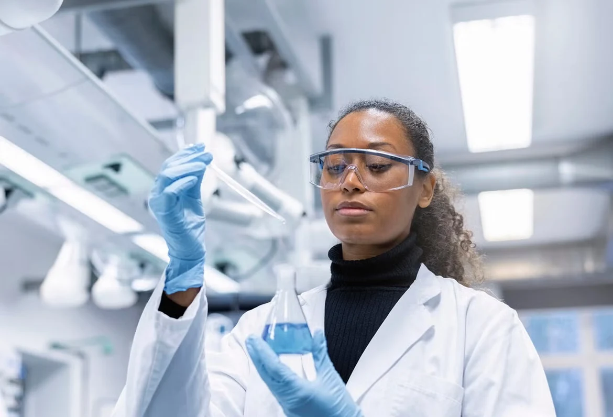
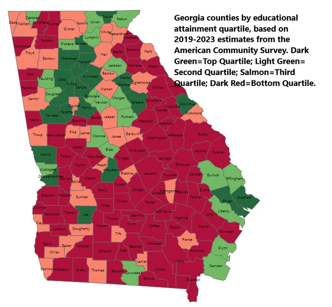
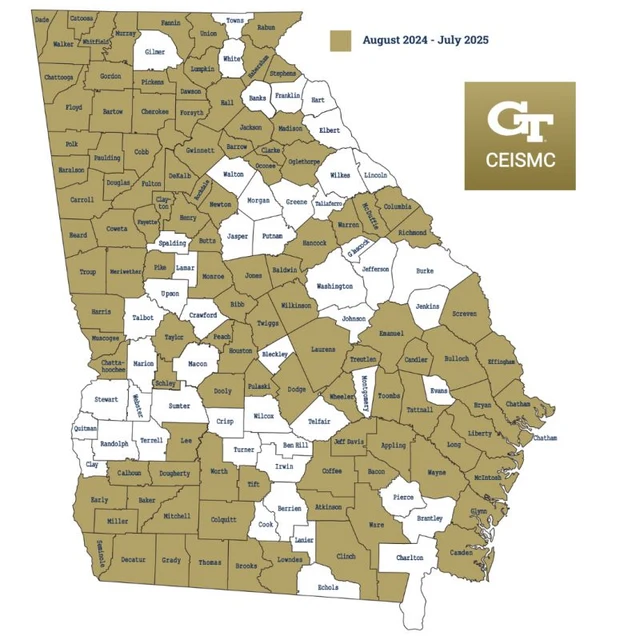
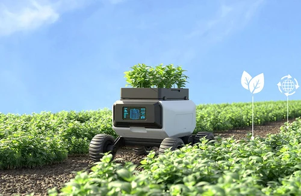

<!-- Clean external stylesheet -->
<link rel="stylesheet" href="style.css">

<!-- External D3 Library via CDN -->
<script src="https://d3js.org/d3.v7.min.js"></script>

<meta charset="UTF-8">

<!-- Header Navigation -->
<header class="nav-shell">
    <div class="wrap nav">
        <a class="brand" href="#top" aria-label="STEM Without Limits home">
            <span class="brand-mark" aria-hidden="true">S.</span>
            <span><strong>STEM WITHOUT LIMITS</strong><small>A Georgia Tech student initiative</small></span>
        </a>
        <button class="menu" aria-expanded="false" aria-controls="navigation">Menu</button>
        <nav id="navigation" class="nav-links" aria-label="Main navigation">
            <a href="#issue">The issue</a>
            <a href="#impact">Our impact</a>
            <a href="#projects">Projects</a>
            <a class="nav-cta" href="#connect">Connect your school &nearr;</a>
        </nav>
    </div>
    <div class="progress" aria-hidden="true"></div>
</header>

<!-- Main Content -->
<main id="main">
    <!-- Hero Section -->
    <section class="hero">
        <div class="wrap hero-grid">
            <div>
                <p class="eyebrow">Quality education. Lasting opportunity.</p>
                <h1>Big ideas.<br>Bright futures.<br><em>For every student.</em></h1>
                <p class="ceismc-intro"><strong>CEISMC is Georgia Tech&rsquo;s Center for Education Integrating Science, Mathematics, and Computing.</strong> It connects K&ndash;12 communities with hands-on STEM learning, teacher development, and university expertise.</p>

                <div class="ceismc-impact">
    <div class="ceismc-impact-heading">
        <span class="ribbon-label">CEISMC IN GEORGIA</span>
        <h3>Expanding access.<br>Creating opportunities.</h3>
    </div>

    <div class="ceismc-impact-stats">
        <div class="ceismc-stat">
            <strong>14,000<span>+</span></strong>
            <span class="stat-label">Students reached</span>
        </div>

        <div class="ceismc-stat">
            <strong>60</strong>
            <span class="stat-label">Georgia school districts</span>
        </div>
    </div>

    <div class="ceismc-impact-footer">
        <span>Rural Computer Science Initiative</span>
        <span>GEORGIA <span aria-hidden="true">/</span> STEM <span aria-hidden="true">/</span> OPPORTUNITY</span>
    </div>
</div>
                
                <div class="actions">
                    <a class="btn" href="#connect">Connect your classroom <span aria-hidden="true">&nearr;</span></a>
                    <a class="text-link" href="#issue">Explore the initiative &darr;</a>
                </div>
                <div class="hero-foot">K&ndash;12 education &nbsp; / &nbsp; Georgia communities &nbsp; / &nbsp; SDG 4</div>
            </div>
            <div class="hero-art">
                <div class="globe-stage">
                    <span class="globe-heading">A global goal. A Georgia connection.</span>
                    <canvas id="georgia-globe" width="600" height="690" role="img" aria-label="Animated globe zooming in on Georgia"></canvas>
                    <div class="globe-caption">
                        <div>
                            <strong>Opportunity<br>starts here.</strong>
                            <p>Georgia classrooms. Lasting possibilities.</p>
                        </div>
                        <div class="globe-controls" aria-label="Globe animation controls">
                            <button id="globe-pause" type="button" aria-pressed="false">Pause</button>
                            <button id="globe-replay" type="button">Replay &#8634;</button>
                        </div>
                    </div>
                </div>
                <p class="hero-globe-note">From SDG 4 to hands-on learning in our communities.</p>
            </div>
        </div>
        
    </section>
    
    <!-- Section 1: Issue -->
<section id="issue" class="section opportunity">
  <div class="wrap">
    <div class="opportunity-grid">

      <div class="opportunity-copy">
        <span class="section-number">02 / The opportunity gap</span>

        <h2>Access to school<br>is only the beginning.</h2>

        <div class="opportunity-text-block">
          <h3>Unequal access</h3>

          <p class="intro">
            Every student deserves the opportunity to explore their
            interests, develop new skills, and imagine a future in STEM.
            But access to a classroom does not always mean access to
            the same educational opportunities.
          </p>

          <p>
            Students attend schools with different levels of access to
            advanced coursework, hands-on activities, academic support,
            and enrichment programs. These differences can shape their
            confidence, interests, and future pathways.
          </p>
        </div>

        <div class="opportunity-text-block opportunity-research">
          <h3>Long-term impacts</h3>

          <p>
            Early experiences with computer science can influence whether
            students see it as a subject they can pursue. Research from
            Maryland found that taking a high school computer science
            course increased the likelihood of earning a computer science
            bachelor's degree by approximately
            <strong>5 percentage points.</strong>
          </p>

          <a class="source"
             href="https://www.iza.org/publications/dp/16758"
             target="_blank" rel="noopener">
            Explore the research &nearr;
          </a>
        </div>
      </div>

      <div class="opportunity-data">
        <div class="chart">

          <p class="chart-title">
            HIGH SCHOOLS OFFERING CALCULUS
            <span>United States · 2020–2021</span>
          </p>

          <p class="chart-explanation">
            The percentage of high schools offering calculus, compared
            by the share of Black and Latino students enrolled.
          </p>

          <div class="bar-group">
            <div class="bar-label">
              <span>High Black &amp; Latino enrollment</span>
              <strong>35%</strong>
            </div>
            <div class="bar-track">
              <div class="bar-fill" style="width:35%"></div>
            </div>
          </div>

          <div class="bar-group">
            <div class="bar-label">
              <span>Low Black &amp; Latino enrollment</span>
              <strong>54%</strong>
            </div>
            <div class="bar-track">
              <div class="bar-fill gold" style="width:54%"></div>
            </div>
          </div>
          

          <div class="gap-note">
            <strong>19</strong>
            <span>
              percentage-point difference
              <small>in schools offering calculus</small>
            </span>
          </div>

          <p class="chart-caption">
    <strong>What this shows:</strong>
    Schools with higher minority enrollment are less likely to offer
    these courses, highlighting an unequal opportunity to access
    computer science education.
</p>
          <a class="source" href="#sources">
            Source: U.S. Department of Education · View references &nearr;
          </a>


        </div>
      </div>

    </div>
  </div>
</section>

    <!-- Section 2: Sustainability -->
    <section id="sustainability" class="section">
        <div class="wrap">
            <div class="sustain-title">
                <span class="section-number">02 / Education is sustainability</span>
                <h2>Stronger classrooms.<br>Stronger communities.</h2>
                <p class="intro">Sustainable communities need people with the knowledge, skills, and confidence to contribute. Quality K&ndash;12 education helps build that foundation across generations.</p>
            </div>
            <div class="alignment">
                <article>
                    <span class="sdg-icon" aria-label="Goal 4">4</span>
                    <p class="eyebrow">The global goal</p>
                    <h3>UN SDG 4: Quality Education</h3>
                    <ul>
                        <li>Promotes inclusive, equitable education and lifelong learning.</li>
                        <li><strong>Target 4.1:</strong> Quality learning in primary and secondary schools.</li>
                        <li><strong>Target 4.5:</strong> Equal educational access for vulnerable students.</li>
                    </ul>
                    <a class="text-link" href="https://sdgs.un.org/goals/goal4">Explore SDG 4 &nearr;</a>
                </article>
                <article>
                    <span class="sdg-icon" aria-hidden="true">&nearr;</span>
                    <p class="eyebrow">The local commitment</p>
                    <h3>Georgia Tech&rsquo;s Sustainability Next Plan</h3>
                    <ul>
                        <li>Names Education for Sustainable Development as a priority.</li>
                        <li>Supports integrating the Sustainable Development Goals into education.</li>
                        <li>Our campaign connects these priorities to K&ndash;12 outreach.</li>
                    </ul>
                    <a class="text-link" href="https://sustainability.gatech.edu/">Explore sustainability at Tech &nearr;</a>
                </article>
            </div>
            <p class="takeaway">Education supports social sustainability by building opportunity that lasts.</p>
        </div>
    </section>

   <!-- Section 3: Opportunities -->
<section id="opportunities" class="section white">
    <div class="wrap audiences">

        <div>
            <span class="section-number">
                03 / Your classroom, connected
            </span>

            <h2>A bridge between<br>Georgia Tech<br>and your school.</h2>


            <p class="section-intro-text">
                Through a rich suite of professional development programs for teachers, hands-on extracurricular and in-school experiences for students, and targeted community partnerships, CEISMC equips local schools with the tools they need to foster lifelong scientific curiosity and technical literacy in students. 
            </p>

            <a class="btn"
               href="https://ceismc.gatech.edu/"
               target="_blank" rel="noopener">
                Discover CEISMC <span aria-hidden="true">&nearr;</span>
            </a>

            
        </div>

        <div class="audience-list">

            <article>
                <span class="audience-icon">01</span>
                <div>
                    <h3>For students</h3>
                    <p>
                        Explore authentic STEM interests, engage in
                        hands-on problem-solving, and build academic
                        confidence through meaningful learning experiences.
                    </p>
                </div>
            </article>

            <article>
                <span class="audience-icon">02</span>
                <div>
                    <h3>For educators</h3>
                    <p>
                        Access professional development, innovative
                        resources, and research-informed instructional
                        strategies to bring STEM learning into the classroom.
                    </p>
                </div>
            </article>

            <article>
                <span class="audience-icon">03</span>
                <div>
                    <h3>For schools</h3>
                    <p>
                        Build lasting partnerships with Georgia Tech
                        through outreach programs, curriculum support,
                        and community-based STEM initiatives.
                    </p>
                </div>
            </article>

        </div>
    </div>
</section>
    <!-- Section 4: Impact & Maps -->
   <!-- Section 4: Impact & Maps -->
<section id="impact" class="section map-section">
    <div class="wrap">

        <div class="maps-heading">
            <div>
                <span class="section-number">
                    04 / From the gap to the connection
                </span>
                <h2>Our current effort to address the disparity.</h2>
            </div>


        </div>

        <div class="maps">

            <figure class="map-panel">
                

                <figcaption>
                    Understanding the opportunity gap
                    <small>
                        County-level differences highlight why access
                        to educational resources and STEM opportunities
                        can vary across Georgia. Areas in red have the lowest average educational attainment. 
                    </small>
                </figcaption>


            </figure>

            <figure class="map-panel">
                

                <figcaption>
                    Connecting communities to STEM
                    <small>
                        CEISMC's outreach footprint illustrates how
                        university partnerships bring educational
                        resources and experiences to Georgia schools.
                    </small>
                </figcaption>

            </figure>

        </div>
    </div>
</section>

    <!-- Section 5: Projects -->
    <!-- Section 5: Projects -->
<section id="projects" class="section white">
    <div class="wrap">

        <div class="section-head-block">
            <span class="section-number">05 / Learning by doing</span>
            <h2>Real projects.<br>Real possibilities.</h2>

            <p class="section-intro-text">
                In addition to supporting teacher development and
                helping students learn through innovative instruction,
                CEISMC believes in the power of hands-on learning.
                Through real-world projects, students apply computer
                science to meaningful challenges, explore emerging
                technologies, and discover how they can use their
                skills to make a difference in their communities.
            </p>
        </div>

        <div class="projects">

            <article class="project">
                <div>
                    <div class="project-image">
                        
                    </div>
                    <p class="eyebrow">AI + community problem-solving</p>
                    <h3>AI for Good Challenge</h3>
                    <p>
                        Students identify a local challenge and explore
                        how artificial intelligence or machine learning
                        could be part of a solution.
                    </p>
                </div>
                <a class="text-link"
                   href="https://s1.ceismc.gatech.edu/rural-cs-initiative-celebrates-fifth-year"
                   target="_blank" rel="noopener">
                    Explore the challenge &nearr;
                </a>
            </article>

            <article class="project">
                <div>
                    <div class="project-image">
                        
                    </div>
                    <p class="eyebrow">Code + creativity</p>
                    <h3>EarSketch: Code Meets Music</h3>
                    <p>
                        Connect computer science with musical expression.
                        Creative coding gives students another way to
                        see themselves as makers.
                    </p>
                </div>
                <a class="text-link"
                   href="https://earsketch.gatech.edu/"
                   target="_blank" rel="noopener">
                    Discover EarSketch &nearr;
                </a>
            </article>

            <article class="project">
                <div>
                    <div class="project-image">
                        
                    </div>
                    <p class="eyebrow">Robotics + agriculture</p>
                    <h3>FarmBot: Growing New Skills</h3>
                    <p>
                        Bring coding, robotics, and data science into
                        agriculture, connecting emerging technology
                        with students' everyday environments.
                    </p>
                </div>
                <a class="text-link"
                   href="https://neweraadvising.gatech.edu/news/farmbot-bridges-worlds-ai-agriculture"
                   target="_blank" rel="noopener">
                    Meet the FarmBot project &nearr;
                </a>
            </article>

        </div>
    </div>
</section>

    <!-- Section 6: Testimonials / Quotes -->
    <section class="section quotes">
        <div class="wrap">
            <div>
                <p class="eyebrow">06 / Voices from the classroom</p>
                <h2>The connection<br>makes a difference.</h2>
                <p>First-person perspectives from educators, students, and school leaders featured in the project.</p>
            </div>

            <div class="testimonial-video">
                <iframe width="560" height="315" src="https://www.youtube.com/embed/cXjZLa1UGXU?si=pwprM0LqwBqKGpLN&amp;controls=0" title="YouTube video player" frameborder="0" allow="accelerometer; autoplay; clipboard-write; encrypted-media; gyroscope; picture-in-picture; web-share" referrerpolicy="strict-origin-when-cross-origin" allowfullscreen></iframe>
            </div>
            <div class="quote-grid">
                <figure class="quote">
                    <blockquote>&ldquo;The initiative has encouraged me to create learning experiences that are hands-on, relevant, and connected to real-world applications so that students can see themselves as capable problem-solvers and creators.&rdquo;</blockquote>
                    <figcaption>Marecia Gregory<small>Teacher &middot; Northside High School, Houston County</small></figcaption>
                </figure>
                <figure class="quote">
                    <blockquote>&ldquo;It's intriguing. I like the code, first of all, but it can be boring if you're just doing numbers and random stuff. With beats, it makes it very fun.&rdquo;</blockquote>
                    <figcaption>Cody Wehner<small>Student &middot; Thomas County Central High School</small></figcaption>
                </figure>
                <figure class="quote">
                    <blockquote>&ldquo;This rural computer science initiative has been transformative for Twiggs County schools. Experiences like robotics and coding in class have excited our kids now that they've been able to see what's possible. This computer science program has been phenomenal.&rdquo;</blockquote>
                    <figcaption>Mack Bullard<small>School superintendent</small></figcaption>
                </figure>
                <figure class="quote">
                    <blockquote>&ldquo;Our program has expanded from a single introductory class to a full pathway, and I&rsquo;ve seen more students express interest in computer science careers, particularly in cybersecurity.&rdquo;</blockquote>
                    <figcaption>Jansen Haight<small>Computer science teacher &middot; Lumpkin County High School</small></figcaption>
                </figure>
            </div>
        </div>
    </section>

   <!-- Section 7: Connect / Action -->
<section id="connect" class="section cta">
    <div class="wrap cta-wrap-container">

        <div class="cta-header">
            <p class="eyebrow">07 / Start with a conversation</p>

            <h2>Bring the next<br>big idea to<br><em>your classroom.</em></h2>

            <p class="intro">
                Whether you're a student, educator, or school leader,
                there are different ways to connect with Georgia Tech
                and expand access to STEM education. Explore existing
                programs, discover classroom resources, or start a
                conversation about bringing new opportunities to
                your community.
            </p>
        </div>

        <h3 class="ways-heading">
            Find the right place to start.
        </h3>

        <div class="participate">

            <article class="participation-card">
                <div class="card-content">
                    <p class="eyebrow">01 / For students</p>
                    <h3>Discover something new.</h3>
                    <p>
                        Explore hands-on STEAM workshops, after-school
                        programs, summer learning, and enrichment
                        opportunities for K–12 students.
                    </p>
                </div>
                <a class="card-link"
                   href="https://expandedlearning.ceismc.gatech.edu/"
                   target="_blank" rel="noopener">
                    Explore student programs &nearr;
                </a>
            </article>

            <article class="participation-card">
                <div class="card-content">
                    <p class="eyebrow">02 / For educators</p>
                    <h3>Grow your teaching toolkit.</h3>
                    <p>
                        Find professional learning, research-informed
                        teaching strategies, and opportunities to
                        bring innovative STEM instruction into your
                        classroom.
                    </p>
                </div>
                <a class="card-link"
                   href="https://ceismc.gatech.edu/community"
                   target="_blank" rel="noopener">
                    Explore educator opportunities &nearr;
                </a>
            </article>

            <article class="participation-card">
                <div class="card-content">
                    <p class="eyebrow">03 / For schools</p>
                    <h3>Build a connection.</h3>
                    <p>
                        Explore partnerships with Georgia Tech,
                        curriculum support, outreach opportunities,
                        and resources for your school community.
                    </p>
                </div>
                <a class="card-link"
                   href="https://ceismc.gatech.edu/community"
                   target="_blank" rel="noopener">
                    Explore school partnerships &nearr;
                </a>
            </article>

            <article class="participation-card">
                <div class="card-content">
                    <p class="eyebrow">04 / Have an idea?</p>
                    <h3>Start a conversation.</h3>
                    <p>
                        Have an idea for a project, workshop, or
                        collaboration? Reach out to CEISMC's School
                        and Community Engagement team.
                    </p>
                </div>
                <a class="card-link"
                   href="https://ceismc.gatech.edu/community/contactus"
                   target="_blank" rel="noopener">
                    Contact the CEISMC team &nearr;
                </a>
            </article>

        </div>

        <div class="contact-row">
            <div>
                <p>Not sure where to begin?</p>
                <span class="contact-sub">
                    The CEISMC team can help you find the right opportunity.
                </span>
            </div>

            <a class="contact-email"
               href="mailto:dasja.williams@ceismc.gatech.edu">
                dasja.williams@ceismc.gatech.edu
            </a>
        </div>

    </div>
</section>

    <!-- Sources Section -->
    <section id="sources" class="refs">
        <div class="wrap">
            <details>
                <summary>Sources, research &amp; project credits</summary>
                <ol>
                    <li><a href="https://civilrightsdata.ed.gov/">U.S. Department of Education, Office for Civil Rights: 2020&ndash;2021 Civil Rights Data Collection.</a></li>
                    <li><a href="https://s1.ceismc.gatech.edu/rural-cs-initiative-celebrates-fifth-year">Georgia Tech CEISMC: Rural CS Initiative Celebrates Fifth Year</a> (October 5, 2026).</li>
                    <li><a href="https://www.iza.org/publications/dp/16758">Liu, Conrad &amp; Blazar: Computer Science for All?</a> IZA Discussion Paper 16758.</li>
                    <li><a href="https://sdgs.un.org/goals/goal4">United Nations: Sustainable Development Goal 4.</a></li>
                    <li><a href="https://sustainability.gatech.edu/">Georgia Tech Sustainability</a> and Sustainability Next plan.</li>
                    <li><a href="https://ceismc.gatech.edu/">CEISMC</a>, <a href="https://earsketch.gatech.edu/">EarSketch</a>, and <a href="https://neweraadvising.gatech.edu/news/farmbot-bridges-worlds-ai-agriculture">FarmBot Bridges Worlds of AI, Agriculture.</a></li>
                </ol>
            </details>
        </div>
    </section>
</main>

<!-- Footer -->
<footer>
    <div class="wrap footer-inner">
        <p><strong>STEM WITHOUT LIMITS</strong><br>A student initiative supporting quality K&ndash;12 education and CEISMC outreach.<br>Georgia Tech &middot; LMC 3403 &middot; SDG 4: Quality Education</p>
        <a href="#top">Back to top &uarr;</a>
    </div>
</footer>

<!-- Clean external data & app scripts -->
<script src="land-data.js"></script>
<script src="script.js"></script>
